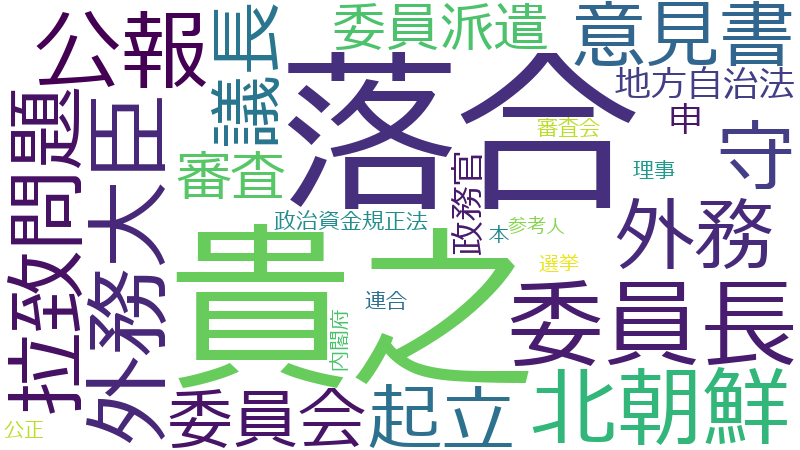

委員長 、委員会 、北朝鮮 、外務大臣 、審査 、落合 、議長 、貴之 、公報 、内閣府 、外務 、意見書 、拉致問題 、政務官 、本 、理事 、公正 、参考人 、地方自治法 、委員派遣 、守 、審査会 、政治資金規正法 、申 、起立 、連合 、選挙
貴之 、落合 、委員長 、外務大臣 、公報 、北朝鮮 、拉致問題 、外務 、守 、意見書 、議長 、起立 、委員会 、委員派遣 、審査 、地方自治法 、申 、政務官 、政治資金規正法 、審査会 、理事 、内閣府 、連合 、本 、選挙 、公正 、参考人